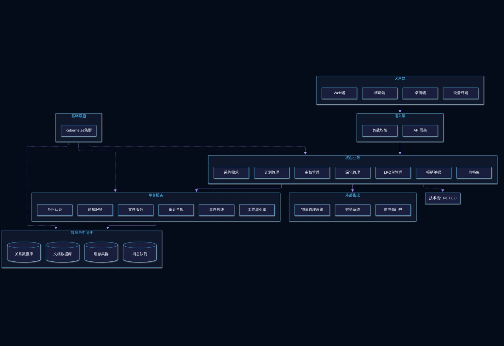

采购管理系统是面向工程项目的物资与服务全链路采购管理平台。针对西非等海外工程项目大量物资需跨境采购，传统模式下需求分散、审批滞后、价格不透明导致采购成本高企的痛点，系统整合需求汇总、计划编制、多级审核、供应商深化谈判、LPO单下达与供应商管理等功能，实现采购全流程数字化闭环，帮助企业优化采购决策、降低供应链风险、提升资金使用效率。

核心功能
系统覆盖采购需求、计划、审核、深化谈判、LPO单管理、报销单据、价格库等全流程核心模块。
采购需求
集中展示全项目发起的采购申请清单。
计划管理
对汇总的需求进行采购计划编制，明确采购预算、时间节点和负责人员。
审核管理
按照预设流程将采购计划及LPO单推送至相应管理人员进行逐级审核。
深化管理
在计划获批后与潜在供应商对接谈判，确定实际采购价格与供应商信息。
LPO单管理
根据深化结果创建正式LPO单并下达给选定供应商，支持LPO单审核、撤销与状态跟踪。
报销单据
基于已审批的LPO单选择物料条目生成报销单据，覆盖计划单、LPO单与入库单，支持批量打印。系统不体现已支付等状态，所有支付操作线下完成。
价格库
记录所有物料的历史采购价格，为编制采购计划和深化谈判提供历史价格参考。
系统架构

Procurement Flow
系统采用采购全流程数字化架构：需求汇总→计划编制→审核→深化谈判→LPO单下达→入库联动，覆盖采购业务全链路；与物资管理系统联动，实现采购-入库-领用闭环；支持多币种结算与跨境采购全流程跟踪。
应用场景
适用于多项目采购需求汇总、采购计划与审核管控、供应商深化谈判管理、LPO单与报销单据管理等场景。

多项目采购需求汇总
集中展示全项目发起的采购申请清单，支持按项目、品类、时间等多维度筛选与汇总分析。

采购计划与审核管控
对汇总需求编制采购计划，明确预算与节点，按预设流程逐级推送审核，审批记录全程留痕。

供应商深化谈判管理
计划获批后与潜在供应商对接谈判，确定实际采购价格与供应商信息，支持多轮谈判记录。

LPO单与报销单据管理
根据深化结果创建LPO单并下达供应商，支持审核、撤销与状态跟踪；基于LPO单生成报销单据，支持批量打印。
优势与保障
核心优势
全链路数字化
从需求提报到LPO单执行全流程线上化，实现采购业务闭环管理。
跨境多币种结算
支持跨境采购全流程跟踪与多币种结算，项目间可按不同币种管理。
与仓储系统联动
与物资管理系统深度联动，实现采购-入库-领用业务闭环。
供应商评价体系
建立供应商评价体系，帮助筛选可靠供应商，降低供应链风险。
交付服务
需求调研
深入了解企业采购流程与供应链结构，制定个性化实施方案。
系统部署
支持本地化部署与云端部署，适配跨境采购业务需求。
培训上线
提供管理员、采购员与供应商分层培训，确保系统顺利上线。
服务保障
持续运维
7×24小时技术支持，定期系统升级与功能迭代。